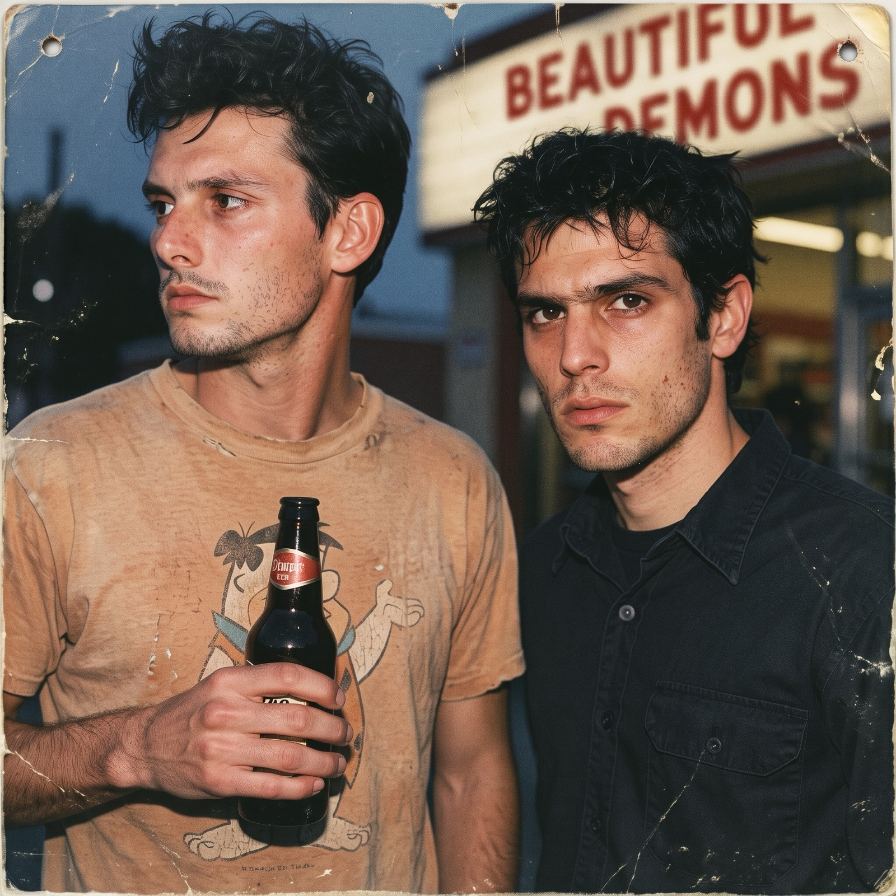
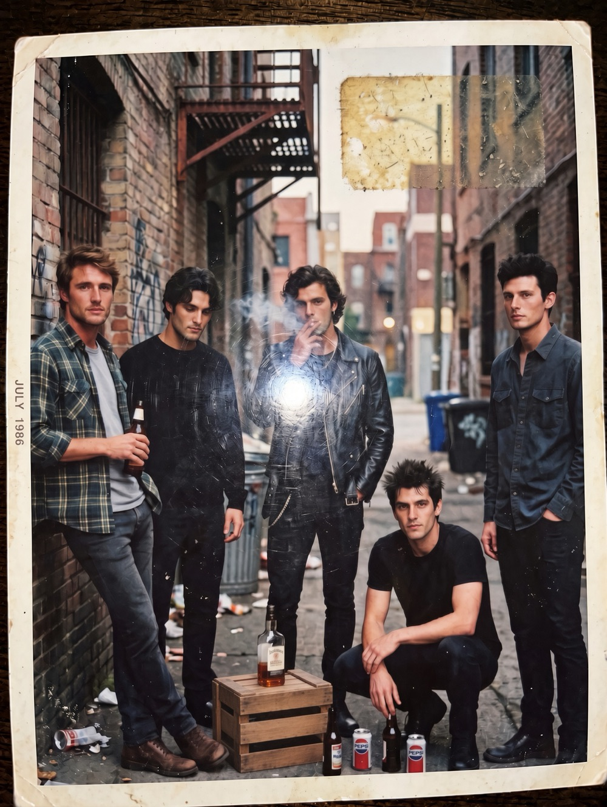
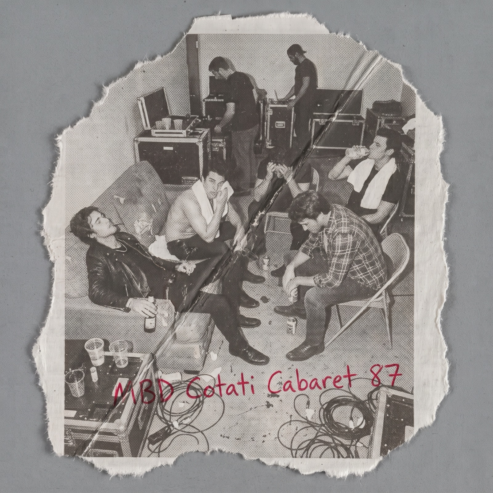
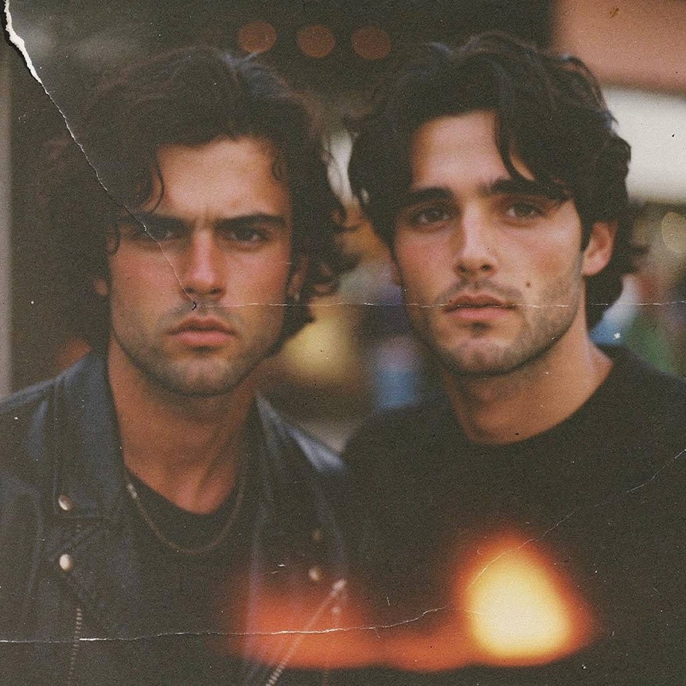
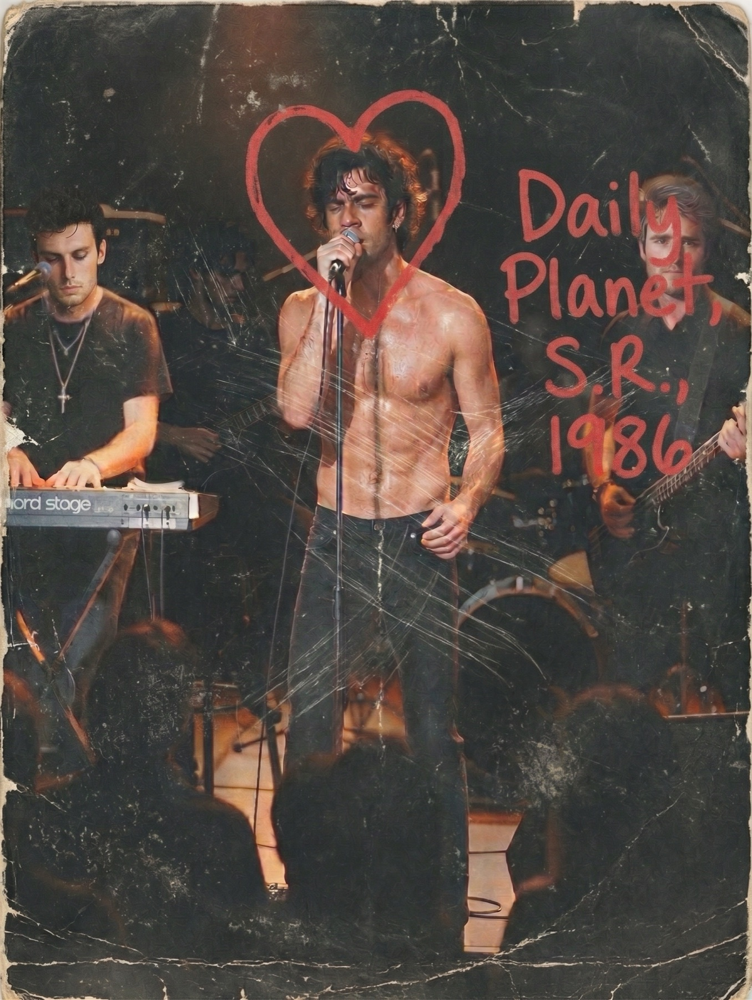
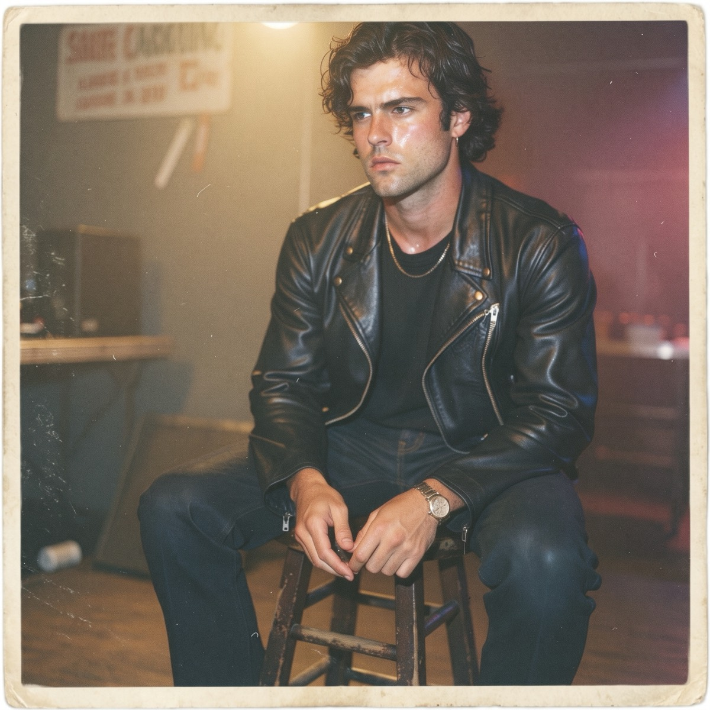

Photos
Photographs and photo-based artifacts from the My Beautiful Demons collection.
Adrian and Nico - Club Shot 1

Outside a venue, date uncertain. The sign in the background is the only clear identifier. Found in a mixed envelope of club photographs.
MBD July 1986

Group photograph marked July 1986 on the border. Alley location not identified. Heavy wear and old adhesive on the print. One of the few images that shows all five together.
Tommy Posing
Tommy with gear. Location and exact date unknown. The amp and cases suggest a load-in or load-out. Kept because it is one of the clearer pictures of him.
MBD Cotati Cabaret 87

Torn photocopy of a backstage photograph. Red handwriting at the bottom reads “MBD Cotati Cabaret 87.” Source of the original print unknown. The damage was already present when it came into the collection.
Elias Writing
Eli at a table with a notebook. Soft window light. No location or date marked. One of the quieter photographs in the collection.
Candid Dane and Eli

Close photograph of Dane and Eli. Edges show wear. No date or photographer noted. Kept because the expressions feel unguarded.
Daily Planet 1986 Gig

Live photograph with later red markings (“Daily Planet, S.R., 1986” and a drawn heart). The print itself is heavily scratched. Appears to be a fan or local photograph that was written on afterward.
Dane - Post Show

Dane seated on a stool after a performance. Residual stage lighting. No venue marked. The expression is tired rather than posed.
More will be added as items are checked.